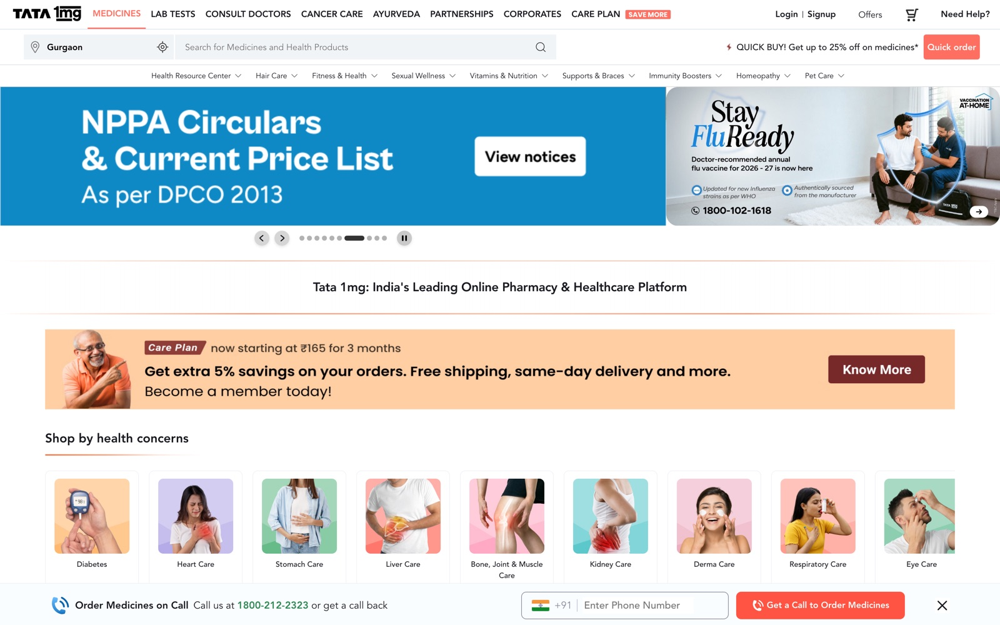
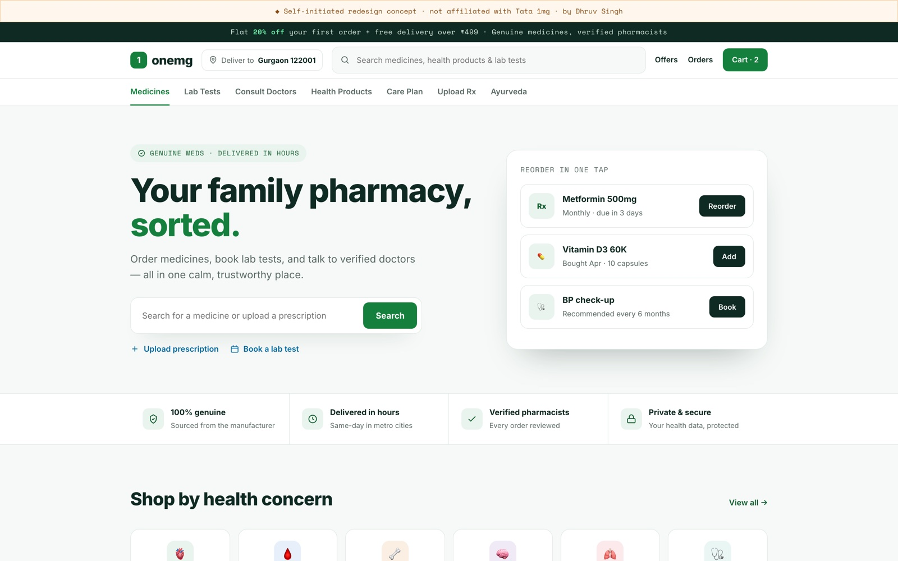

Tata 1mg — Redesign
A speculative redesign of India's largest online pharmacy: take a busy, banner-heavy marketplace and turn it into something calm, trustworthy, and quietly efficient — the way you'd want your family's medicines handled.
The problem
The live site does a lot — medicines, lab tests, consults, care plans — but it shows all of it at once: stacked promo banners, competing colours, and pop-ups that cover the page on load. For a category built entirely on trust, the visual noise works against it.


Open the live redesignWhat changed
One calm surface instead of five competing ones. A single, prominent search — the #1 pharmacy task — with prescription upload and lab tests one tap away. Health-green signals trust; whitespace signals care.
A dedicated "Reorder in one tap" panel surfaces the real repeat behaviour of pharmacy users — chronic meds are refilled monthly — turning a chore into a single tap and lifting repeat orders.
Why it matters for pharma
Regulated healthcare brands live or die on credibility. This redesign shows the exact instincts a pharma client needs: reduce cognitive load, foreground trust signals, respect accessibility, and still keep the commercial engine (reorders, care plans, consults) working hard.
Calm is not the absence of conversion — here, it is the conversion strategy.
Note
This is a self-initiated concept and is not affiliated with or endorsed by Tata 1mg. The "before" is their live site, shown for comparison; the "after" is my own illustrative design.